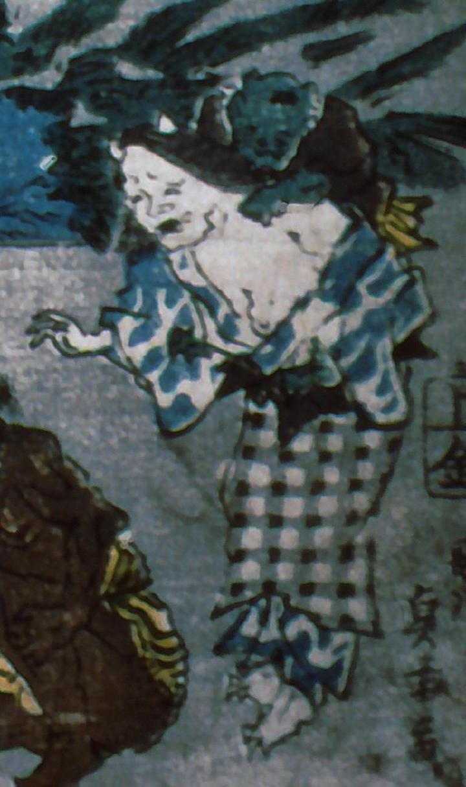

← 图鉴索引

緑の子鬼を背負った女。2本の角が生えている。着物がはだけて乳房が露出している。
著作者：歌川貞重／出典：親書誌：A5_pushkin_0033：教訓三界図会；キョウクンサンガイズエ／日付：2011／資源識別子：A5_pushkin_0033_0007_0000
Copyright (c)2010- International Research Center for Japanese Studies, Kyoto, Japan. All rights reserved.